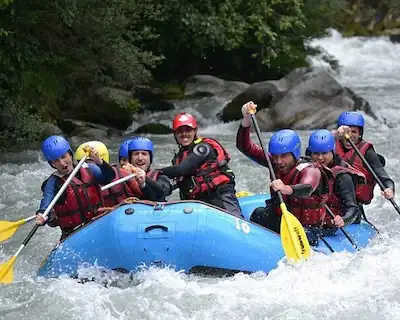
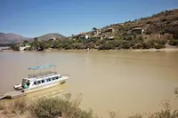
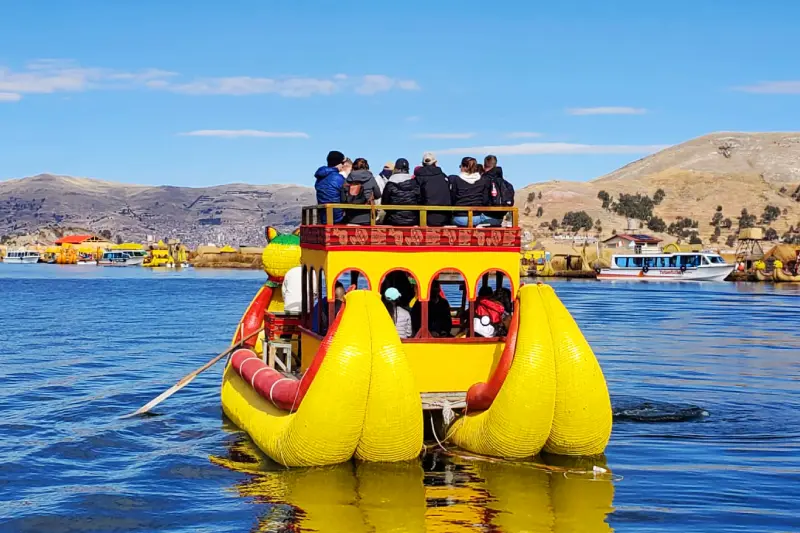
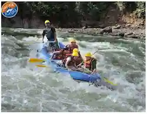
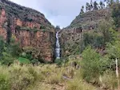
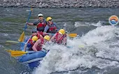
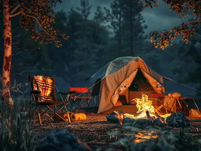
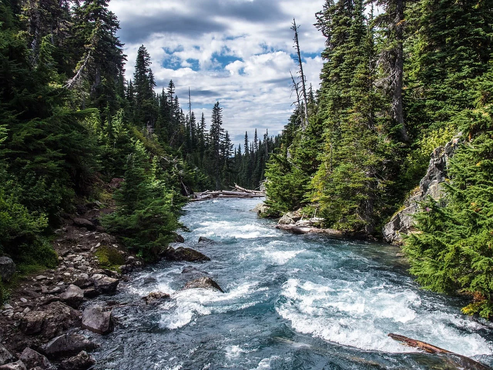
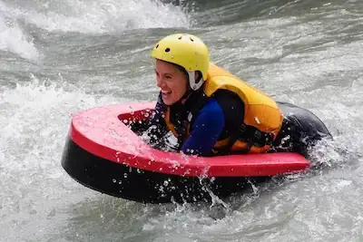

Contact our specialists.

Discover our Trips
Activities You Will Enjoy
CAMPING is an immersive outdoor activity where you set up a temporary shelter, such as a tent or an RV, away from the hustle of urban life to reconnect with nature. It typically involves spending the night under the stars, cooking meals over an open campfire, and participating in recreation like hiking, fishing, or stargazing. This peaceful escape allows individuals, friends, and families to unplug from modern technology, appreciate the beauty of natural landscapes, and enjoy the simplicity of the wilderness.
Embark on an invigorating day HIKE through the rugged trails of Tunari National Park near Cochabamba, Bolivia. As you ascend past rolling high-altitude grasslands and rocky ridges, you will be rewarded with sweeping panoramic views of the city below and distant peaks. The moderate-to-challenging route spans about 10 kilometers round trip, offering a refreshing encounter with local Andean flora, crisp mountain air, and a peaceful escape into nature.
HYDROSPEED, also known as riverboarding, is an exhilarating, high-adrenaline water sport where you navigate rushing river rapids while lying face-down on a buoyant, lightweight fiberglass or plastic board. Holding onto the board’s specialized handles for steering and wearing flippers on your feet for propulsion, you are immersed directly in the water, feeling the raw power of the current as you conquer waves, eddies, and swirling hydrospeed whitewater channels. It offers an intensely personal and thrilling way to experience a river canyon, bringing you face-to-face with nature's obstacles in a fast-paced aquatic adventure.








| Activity | Destination | Duration | Difficulty | Price |
|---|---|---|---|---|
| Camping | Nationla Park | 8 Hours | Easy | $45.00 |
| Clear Kayak Tour | Blue Bay | 3 Hours | Medium | $60.00 |
| Hydrospeed | Angostura River | 4 Hours | Medium | $60.00 |
| Alpine Rock Climbing | Eagle's Peak | 2 Days | Hard | $120.00 |
| Hiking | Tunari National Park | 4 Hours | Easy | $35.00 |